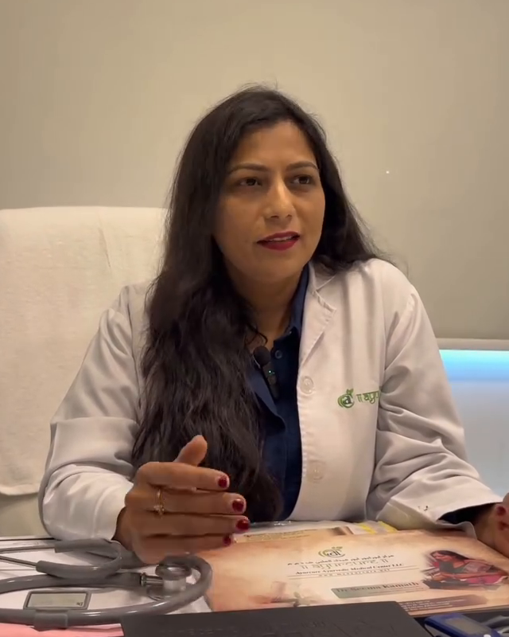

MEDICAL LEADERSHIP
Meet Dr. Seema Kamath
Founder, CEO & Medical Director · Ayurveda Practitioner

FOUNDER & MEDICAL DIRECTOR
Dr. Seema Kamath
Qualifications: BAMS, PGCPK, D.Pharma
Dr. Seema Kamath is the Founder, CEO and Medical Director of Ayurcure. She has professional experience in India and the UAE, with a special interest in Panchakarma, bone and spine care and lifestyle-related concerns.
Consultations help determine whether a particular therapy is appropriate for each individual.
Enquire about consultationWATCH THE INTRODUCTION